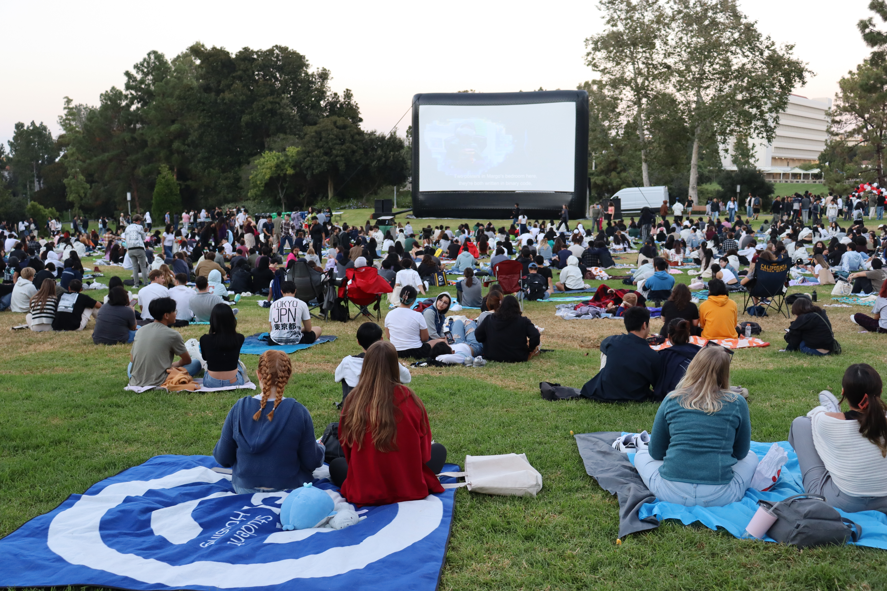
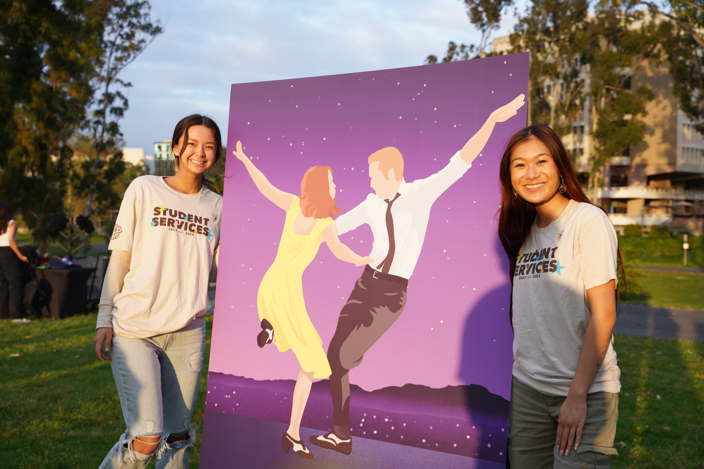
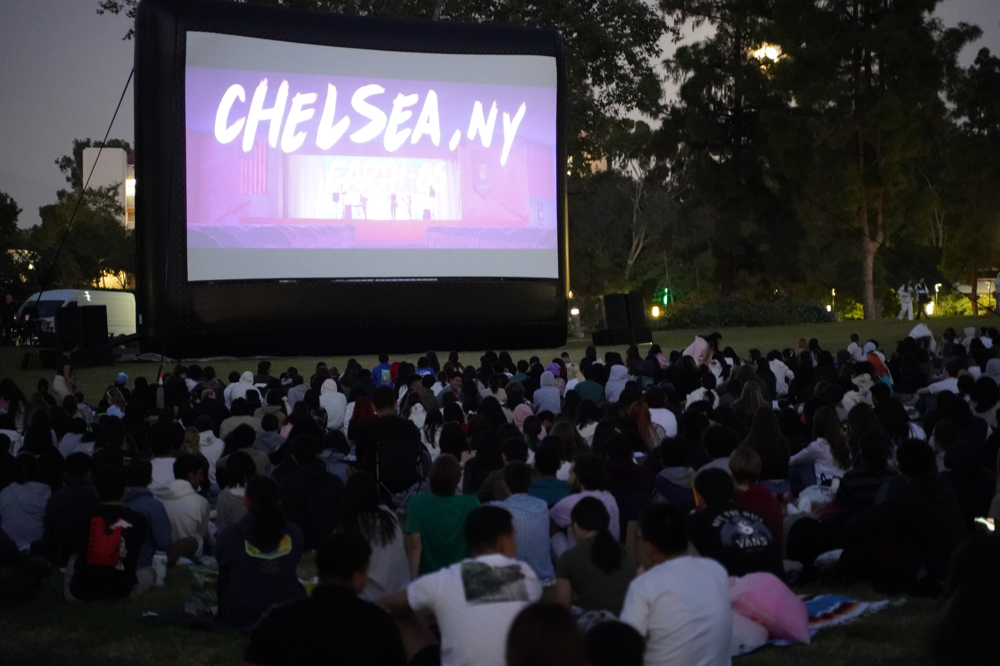
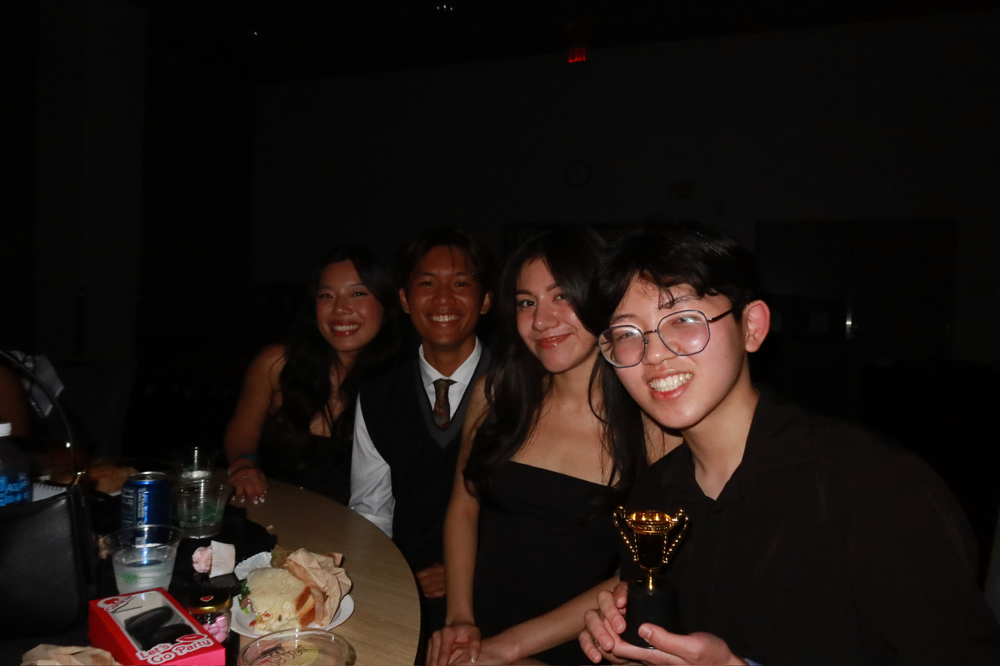

Screen on the Green is a semi-annual outdoor movie screening held at UCI's Aldrich Park. As the Office of Student Service's (SSVP) Multimedia Commissioner, I coordinated all logistics from venue setup and vendor management to audio-visual production and on-site staffing, ensuring a seamless experience for hundreds of attendees.
Managed all operations: from concept ideation, pre-event planning, vendor communications, to day-of setup, staff shift coordination, and post-event breakdown. Worked cross-functionally with Professional Event, Marketing, and Finance Staff, and campus partners to deliver a polished, reliable event experience.

Screen on the Green had run for years as a reliable but plateaued event - solid attendance, but no real growth. As Multimedia Commissioner, I knew I could elevate marketing and programming, not just maintain it: bigger turnout, tighter production, and a $21,600 budget to manage responsibly.

With less than a month before the event, our film license for Barbie (2023) fell through. Rather than delay or cancel, I acted fast with my team and quickly pivoted to an alternative while holding the budget and every other logistic, from venue to vendors to staffing, in place.

Over my time running planning, attendance grew from roughly 600 to 900+ attendees - the largest audience SOTG has ever seen, which is part of why I was named Commissioner of the Year out of 14 others, being the youngest and only sole commissioner. I also trimmed about $1,200 in expenses through vendor renegotiation and in-house production alternatives, without attendees noticing a drop in quality.
